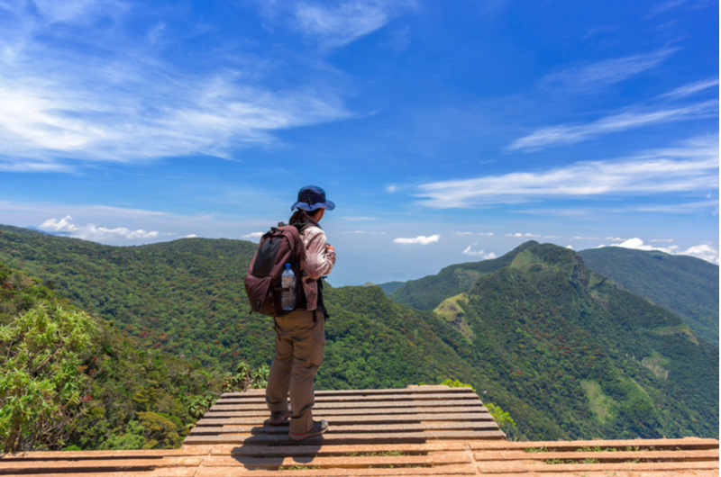
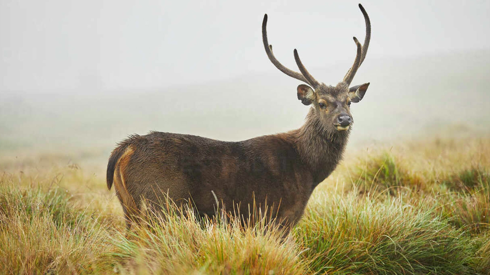
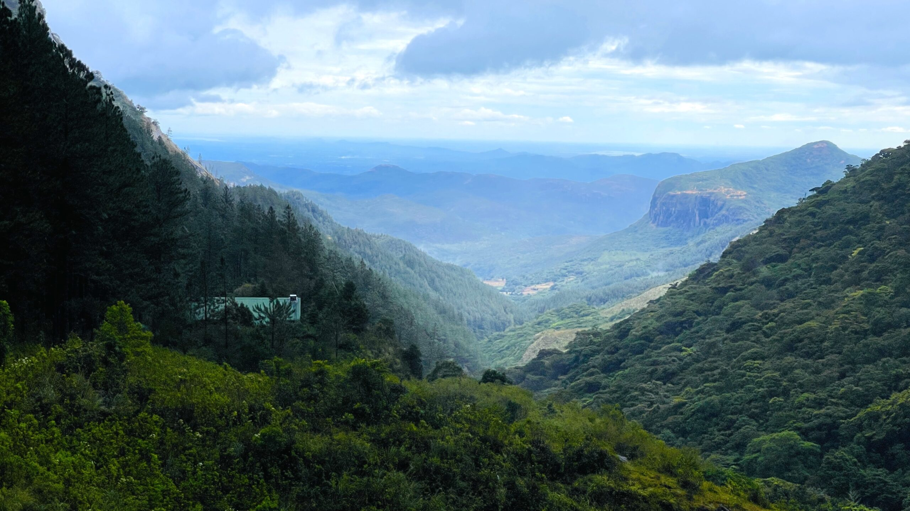

Central Highlands of Sri Lanka

The Central Highlands are the latest site to be added to Sri Lanka’s list of World Heritage Sites, having been awarded
the title in 2010. This stunning region brings travellers 2,500 metres above sea-level and offers an amazing variety of
vegetation and wildlife, including endangered species like the elusive Sri Lankan leopard. In fact, the area is considered
a “super biodiversity hotspot” with global importance.
The Central Highlands consists of three distinct components, namely the Peak Wilderness Protected Area, Horton Plains
National Park and Knuckles Conservation Forest. A large portion of species endemic to Sri Lanka are restricted to these
diverse areas.
01. Horton Plains National Park

Looking forward to a high altitude trek that promises to take you to one of the most stunning destinations in Sri Lanka.
then Horton’s Plain is a ‘must’ in your travel itinerary.
Everything is so picture perfect here your photography skills will certainly be put to the test. Ramble through the mist
covered grasslands, patches of evergreen forests and cloud forests interspersed with fresh water streams and mist covered
swamps. The only sound to be heard is that of water gushing, bird singing and the wind blowing wildly through the trees…
it’s nothing short of perfect peace and total bliss.
For those with endurance, Sri Lanka’s second highest mountain, Kirigalpottha and third highest Totupola Kanda are waiting to
be explored.
This UNESCO designated Natural World Heritage site, being a biodiversity hotspot is one of the best places to observe nearly
750 species of plants, 24 species of mammals, 87 species of birds, 09 species of reptiles and 08 species of amphibians.
However the key attraction at Horton Plains is a sheer precipice with an 870m (2,854 ft) drop called “World’s End” – from
where one can see the world stretch out to all eternity and the Baker’s fall, known as one Sri Lanka’s most beautiful
waterfalls with its water pounding down a 20m (66ft) high stone slab.
02. Knuckles Conservation Forest

The Knuckles Mountain Range also called the Knuckles Massif; a bio-diversity hotspot located in the districts of Kandy
and Matale in the Central Province of Sri Lanka. Situated at a height of over 3000 ft above sea level, covering a land
area of approximately 21 ha it consists of five peaks; namely Kirigalpottha, Gombaniya, Knuckles, Koboneelagala and
Dotulugala which form the shape of the knuckles in a clenched fist. The area situated above 1500 m was declared a climatic
reserve in 1873 and a conservation forest in 2000, later a National Man & Biosphere Reserve and a World Heritage
Site in 2009. It is today considered as one of South Asia’s important sites for the conservation of montane tropical forest
habitats.
This picturesque mist laden mountain range is where the Knuckles Forest Reserve also known as the Knuckles Conservation
forest is found. It is an UNESCO designated World Heritage Site that comes under the Central Highlands of Sri Lanka’s
World Heritage Property, one of the two World Heritage Natural Properties in Sri Lanka.
The climate here varies from hot to very wet and cold with some higher elevations reporting ground frost during
January – March with strong winds at most other times. The vegetation in the valleys and foothills consist mainly of
semi evergreen vegetation with large trees, the upper slopes contain tropical montane humid evergreen rain forest and
the upper levels possess cloud forests; a moist forest with a low-level cloud cover where various endemic species of ferns,
orchids, lichens and mosses grow profusely. The other types of unique vegetation found here includes the distinctively
beautiful grassland called “Pitawala Patana”, the picturesque Riverine forests alongside the rivers and waterways,
the Scrublands and the Pygmy forests with its twisted and gnarled plant life that grow up to 1-2 m from ground level.
The Knuckles massif separates itself from the central hills by the Dumbara Valley; a deep gorge. There are several trails to
the Knuckles Mountain range, each one different and exclusive, making it idealfor hiking, trekking, waterfall hunting, bird
watching and certainly a must place for some scenic photography. Visitors can travel on three routes from Kandy via Rattota,
via Wattegama and via Teldeniya.
The Knuckles Forest reserve is considered a vital water catchment with many of its streams feeding important downstream rivers
such as the gigantic Mahaweli River (the country’s longest), the Heen River, Maha Oya, Hasalaka Oya and the Theligamu Oya.
The Forest Reserve has recorded up of 1033 plant species belonging to 141 families of which 15% are endemic. In addition there
are 128 bird species of which 17 are endemic; some of them are the Black eagle, Pale billed flower pecker, Barbets, Lorikeets,
Egrets, Herons, Bulbuls, Babblers, Kingfishers and Wood peckers. The 31 mammal species include the Wild boar, Black-naped hare,
Mouse deer, Sambar deer, Elephant, Wild buffalo, Monkey, Squirrel, Civet cat, Golden palm cat, Loris, Jackal, Mongoose, Bandicoot
and Porcupine. The 20 amphibians’ species include the Kirthisingha’s Rock Frog and the Leaf nosed lizard, 15 species
of fish include the Phillips Garra, Blotched filamented barb and Martenstyn barb. There are 60 species of butterflies, with two
endemic species the Birdwing and the Blue Mormon. There are also 17 species of mollusks and 53 species of reptiles.